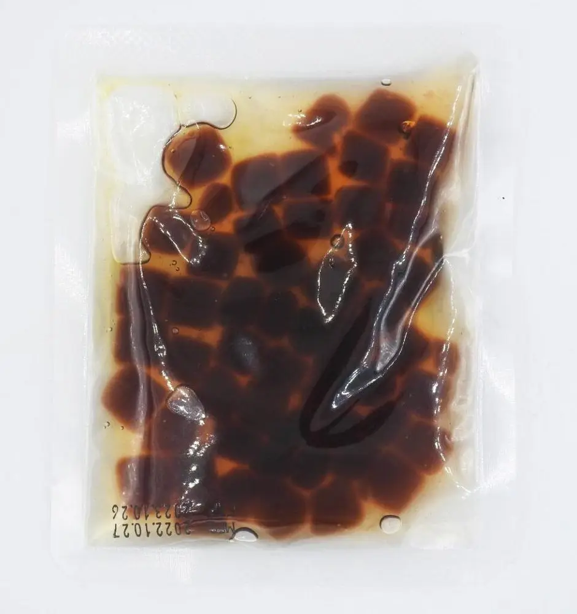

Articles / Tips & trends
Introducing our Ready-to-eat instant pearls!
2022-11-21 · New products, News

Original public content from Yen Chuan. Product claims and specifications remain subject to confirmation by the company.
What’s bubble tea without tapioca pearls? If you want to make bubble tea at home but don’t have the time to cook the pearls for hours, using instant tapioca pearls is a no-brainer.
However, most instant pearls in the market still require some form of heating, be it microwaving or soaking in hot water. What if you don’t have a microwave around, but still want to enjoy your boba?
Our Ready-to-Drink Instant tapioca pearls is here to help!

What makes it different from other instant pearls?
Unlike regular instant pearls, these pearls are designed to be ready-to-eat. Just tear open the package, pour out the pearls into your favourite bubble tea, and bob’s your uncle!
Pretty simple, right? No more struggling to find the right microwaving time, each packet’s pearls are just as chewy as the next!
What can I do with it?
Go wild with it!
Having your favourite drink and want to add a dash of chewy goodness? Grab a packet and drop in some pearls right away!
Enjoying some fluffy pancakes, refreshing ice cream, springy pudding or a mountain of shaved ice? Nothing enhances them more than delicious tapioca pearls!
Keep some in your office pantry, or bring them with you in a backpack or handbag – you’ll never know when you’ll crave for some boba pearls!
That sounds great – where can I find it?
Since this is a new product, you can find it nowhere else but here.
Want to give it a try?